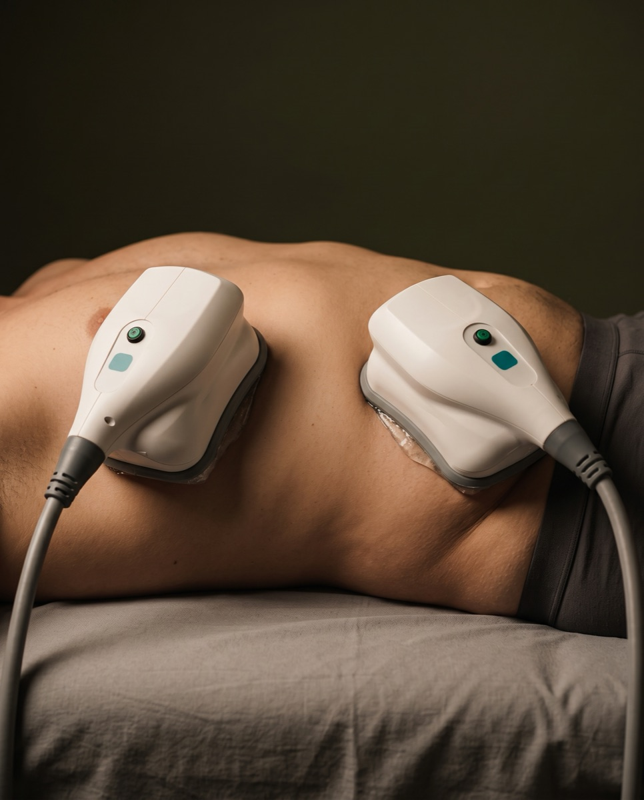

Kriolipoliza cooltech® w Płocku – skuteczne zamrażanie tkanki tłuszczowej
Nowoczesny, bezinwazyjny sposób modelowania sylwetki za pomocą kontrolowanego chłodzenia — bez bólu, bez rekonwalescencji, z redukcją tkanki tłuszczowej nawet do 45%.
Cena już od:
790
zł
Dostępne dla tego zabiegu na recepcji w salonie
Zabiegi Hi-Tech
Kriolipoliza w Płocku – jak działa i dla kogo jest ten zabieg?
Myślisz, że każdy zabieg redukcji tkanki tłuszczowej musi być inwazyjny? To nieprawda! Kriolipoliza cooltech® to nowoczesny sposób modelowania sylwetki za pomocą kontrolowanego chłodzenia — podczas zabiegu tkanka tłuszczowa jest zamrażana w temperaturze -8°C przez 70 minut, dzięki czemu komórki tłuszczowe zostają uszkodzone i metabolizowane w sposób fizjologiczny.
Zabieg jest całkowicie bezbolesny i bezpieczny — urządzenie Cooltech® zostało poddane rygorystycznym badaniom klinicznym, potwierdzającym skuteczność i niską inwazyjność. Sprawdza się szczególnie na brzuchu, udach, ramionach, bokach i pośladkach — oszałamiające efekty widać już po pierwszej sesji.
FAQ
Najczęściej zadawane pytania
Czy zabieg kriolipolizy boli?
Absolutnie nie. To przyjemny i komfortowy zabieg, podczas którego odczuwasz jedynie lekki chłód i zassanie fałdu skórnego — możesz się w tym czasie całkowicie zrelaksować.
Kiedy zobaczę pierwsze efekty?
Pierwsze efekty są widoczne już po 3–4 tygodniach, a pełny rezultat po około 8 tygodniach. Redukcja tkanki tłuszczowej sięga nawet 30–45%.
Ile trwa jeden zabieg?
Zabieg kriolipolizy trwa 70 minut. Rekomendowana liczba zabiegów ustalana jest indywidualnie, podczas bezpłatnej konsultacji.
Na jakie partie ciała można wykonać kriolipolizę?
Najczęściej na brzuch, uda, boczki, ramiona i pośladki — specjalnie zaprojektowane głowice docierają też do trudno dostępnych miejsc, jak biodra, talia, plecy czy podbródek.
Jak przygotować się do zabiegu?
Tuż przed zabiegiem warto się porządnie nawodnić — zalecamy wypicie 2 litrów wody. Jeśli zabieg dotyczy brzucha, a w tym czasie wypada Twoja miesiączka, skontaktuj się z nami, żeby przełożyć termin.
Czy po zabiegu mogą pojawić się skutki uboczne?
Na skórze może wystąpić przejściowe zaczerwienienie wywołane kontrolowanym stanem zapalnym — ustępuje samoistnie w ciągu kilku godzin.
Technologia cooltech®
Cooltech®. Kontrolowane schładzanie, mierzalne efekty.
Cooltech® hiszpańskiej marki Cocoon Medical® to platforma przeznaczona do redukcji tkanki tłuszczowej z różnych obszarów ciała poprzez kontrolowane schładzanie, czyli kriolipolizę — w bezpiecznym procesie doprowadza do apoptozy (naturalnej likwidacji) komórek tłuszczowych, wymodelowując i wyszczuplając wybrane partie ciała.
Kontrolowane chłodzenie
Praca w temperaturze -8°C
Urządzenie schładza tkankę tłuszczową w sposób selektywny i kontrolowany, doprowadzając do rozpadu komórek tłuszczowych bez uszkadzania otaczających tkanek.
Dopasowanie do obszaru
Głowice dobierane indywidualnie
Specjalnie zaprojektowane głowice różnej wielkości docierają nawet do trudno dostępnych miejsc — pośladków, bioder, talii, pleców, ramion czy podbródka.
Podwójne działanie
Chłodzenie + masaż próżniowy
Głowica jednocześnie schładza i wykonuje masaż próżniowy, co przyspiesza rozbijanie tkanki tłuszczowej i dodatkowo redukuje cellulit w miejscu zabiegu.
Potwierdzona skuteczność
Rygorystyczne badania kliniczne
Urządzenie Cooltech® zostało poddane badaniom klinicznym potwierdzającym, że zabiegi z jego wykorzystaniem są bezpieczne, skuteczne i mało inwazyjne.

Przejrzysty cennik
Proste ceny dopasowane do liczby przyłożeń.
Cennik dzieli się na przyłożenie jednej lub dwóch głowic jednocześnie — a cena i czas trwania są znane od razu, bez ukrytych kosztów i niespodzianek podczas płatności.
Wskazania do zabiegu
Ten zabieg pomoże, jeśli:
Zmagasz się z uporczywą tkanką tłuszczową na brzuchu, udach, ramionach lub bokach
Szukasz bezbolesnej, nieinwazyjnej alternatywy dla tradycyjnej liposukcji
Chcesz wymodelować sylwetkę bez okresu rekonwalescencji
Zależy Ci na redukcji cellulitu w miejscu zabiegowym
Chcesz ujędrnić skórę i poprawić jej sprężystość
Zależy Ci na usunięciu nadmiaru toksyn gromadzących się w ciele
Szukasz zabiegu, który dotrze też do trudno dostępnych miejsc — bioder, pleców czy podbródka
Cennik
Ile kosztuje kriolipoliza w Płocku?
Cena zależy od liczby jednocześnie przyłożonych głowic — im więcej naraz, tym większa powierzchnia ciała w jednej wizycie. Poniżej sprawdzisz dokładny cennik.
Konsultacje
Pakiet PowitalnyPromocja
149 zł
DERMOkonsultacja (ciało) · 35 min
149 zł
ZarezerwujPrezent na start: jeśli po konsultacji zdecydujesz się na rekomendowany zabieg (w tym samym dniu lub w ciągu 14 dni), cała kwota 149 zł zostanie odliczona od jego ceny. Ekspercki plan opieki otrzymujesz w prezencie!
Wizyta kontrolna · 15 min
0 zł
Zabieg
od 790 zł
Przyłożenie 1 głowicy · 1 godz. i 30 min
790 zł
ZarezerwujPrzyłożenie 2 głowic (na raz) · 1 godz. i 30 min
1290 zł
Zarezerwuj
Pakiety
1990 zł
Zalecenia zabiegowe i przeciwwskazania
Postępowanie przed i po zabiegu
- Choroba Raynauda
- Pokrzywka na skutek działania zimna, krioglobulinemia
- Niewydolność funkcjonowania narządów (poważna choroba wątroby, serca, nerek)
- Nieuregulowana cukrzyca
- Infekcja lub gorączka
- Infekcje wirusem HIV, HCV
- Nowotwór
- Ciąża, karmienie piersią
- Zmiany skórne chorobowe w obszarze poddawanym zabiegowi
- Żylaki, zapalenie żył, zakrzepowe zapalenie żył
- Choroby systemowe oddziałujące na skórę (toczeń rumieniowaty, zapalenie skórno-mięśniowe, twardzina)
- Miesiączka — w przypadku wykonywania zabiegu na brzuch
- Na początku zaprosimy Cię na bezpłatną konsultację z kosmetologiem, który opracuje dopasowany do Ciebie plan terapii.
- Tuż przed zabiegiem porządnie się nawodnij — zalecamy wypicie 2 litrów wody.
- Jeśli w okolicach terminu zabiegu na brzuch wypada Twoja miesiączka, skontaktuj się z nami, żeby przełożyć termin.
- Przez kilka dni po zabiegu unikaj pokarmów wysokobiałkowych, wysokotłuszczowych i wysokoenergetycznych.
- Dużo pij — w ciągu 24h po zabiegu wypij ok. 2 litrów wody, żeby ułatwić usuwanie toksyn z organizmu.
- Zadbaj o zmianę stylu życia — aktywność fizyczną i zbilansowaną, zdrową dietę.
- Przejściowe zaczerwienienie skóry to normalna reakcja — ustępuje samoistnie w ciągu kilku godzin.